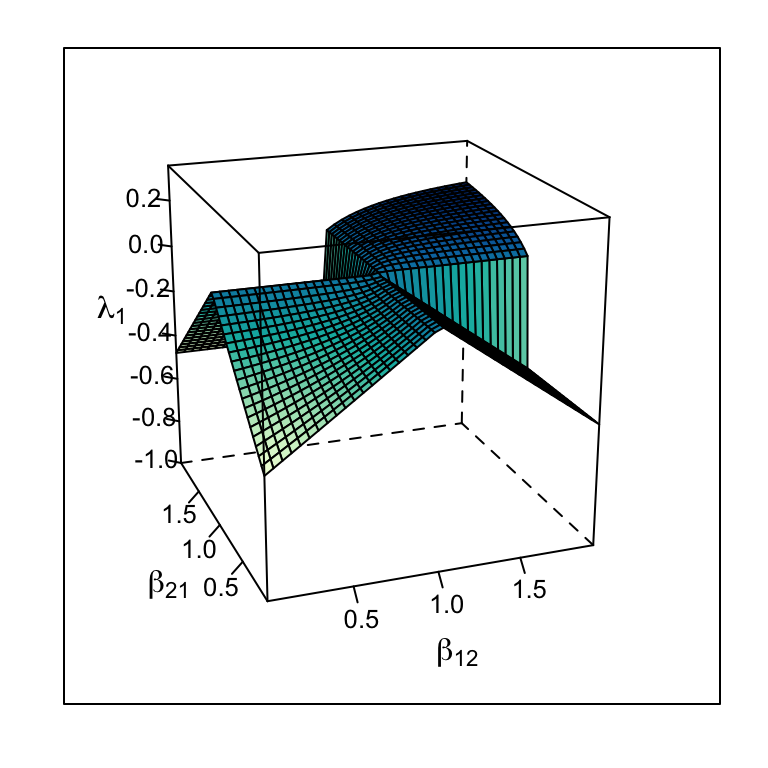
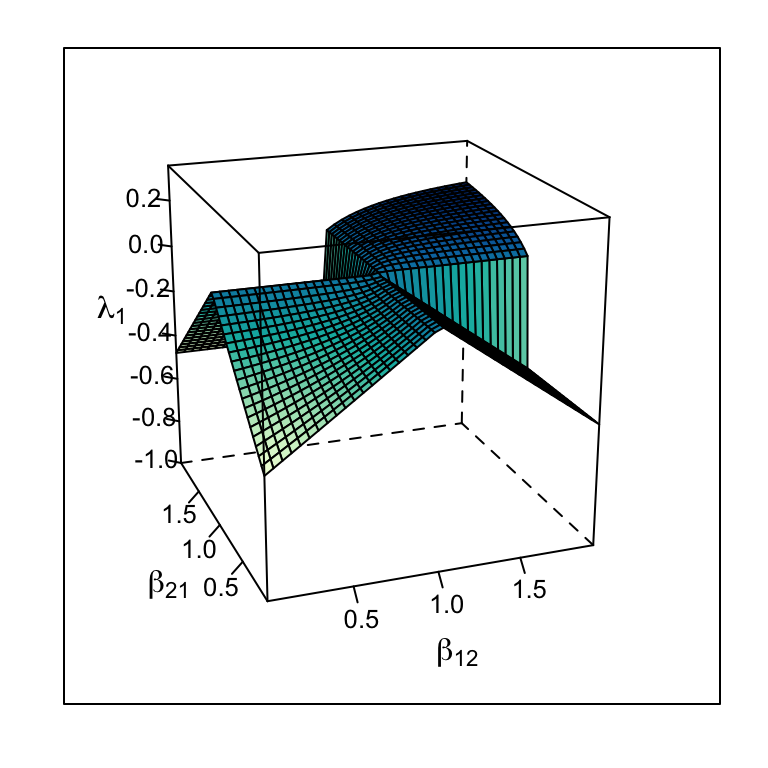
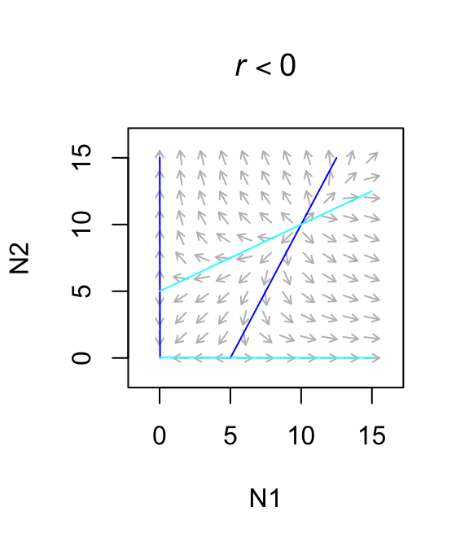
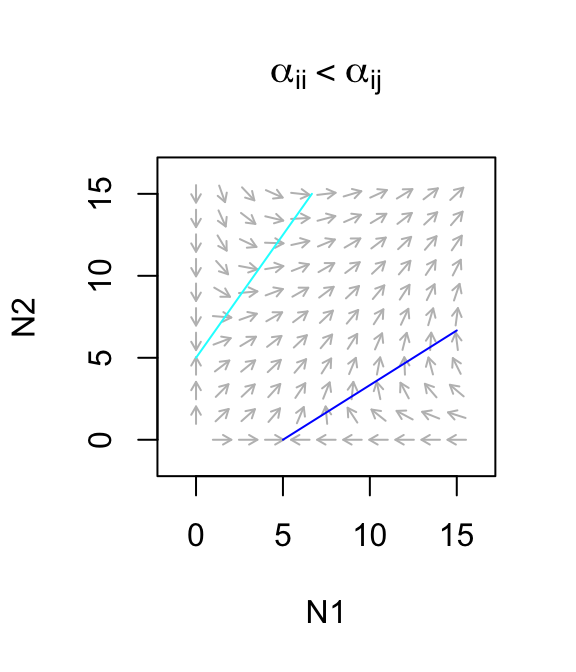
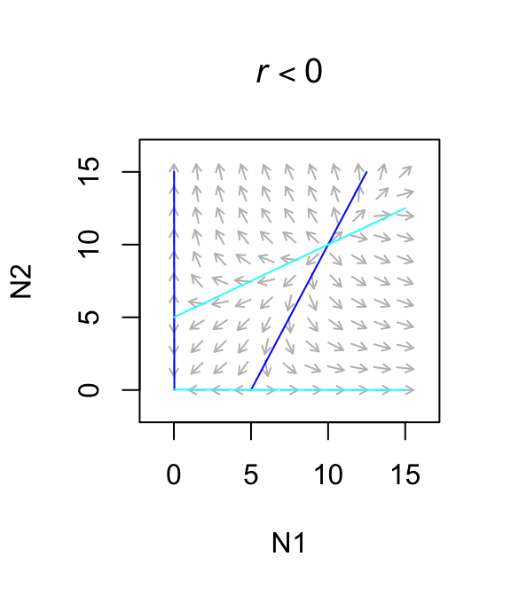
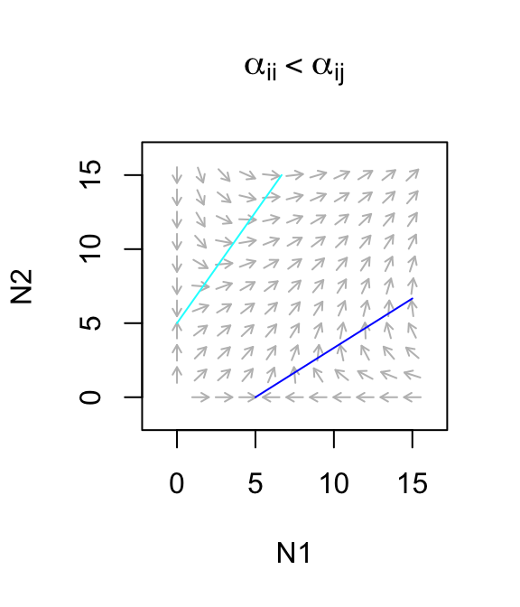

7 Direct competition and mutualism
Different species frequently compete for limiting resources, and as a result have negative impacts on each other. For example, change in species composition during secondary succession (Fig. 7.1) appears mediated by, among other things, a species’ ability to intercept light, grow, and cast shade over other species. This chapter addresses very simple ways to represent such interactions between species. Unless I specify otherwise, “competition” in this chapter will refer to competition between species, or interspecific competition.
![Changes in abundances of six species of asters during early secondary succession. This turnover of perennial weeds appears mediated by competition for light, among other factors (data from the long-term Buell-Small Succession study [http://www.ecostudies.org/bss/]).](figs/weeds-1.png)
Figure 7.1: Changes in abundances of six species of asters during early secondary succession. This turnover of perennial weeds appears mediated by competition for light, among other factors (data from the long-term Buell-Small Succession study [http://www.ecostudies.org/bss/]).
In this chapter we introduce direct interspecific competition and mutualism (Fig. 7.2). Direct competition is an interaction in which individuals experience a direct negative effect of another individual through aggressive interaction via contact or signaling. Indirect competition are negative interactions mediated by another factor, such as a limiting resource. When grass species compete for nitrate and ammonium, it is the shortage of those nutrients that causes the negative effects, and that shortage results from their consumption by competing species. However, regardless of the biological complexity of indirect competition, we can learn a lot by modeling it as a simplified direct interaction.
Direct mutualisms are described mathematically in a manner that is identical to direct competition, but with signs reversed. Many pairwise mutualisms are direct insofar as they do not involve a third species or element. Think bumblebees and partridge peas, or mycorrhizae, or Rhizobium and legumes.
In a later chapter, we add more mechanistic, and messier, biological complexity when we describe indirect competition for one and two resources, and when we model more explicitly the costs and benefits of of mutualism between two or four species. This will be a consumer-resource approach to competition and mutualism.
Figure 7.2: We can model competition as direct negative effects, or as indirect interactions mediated through a resource.
In this chapter model direct interactions using the Lotka-Volterra framework.
7.1 Interspecific competition
Our models of density-dependent growth were built upon the assumption that individuals within a single population had negative effects on each other, which we refered to as intraspecific competition. Here we assume that individuals of different species also have negative effects on each other.
The classic model of competitive interactions is the continuous Lotka-Volterra model of interspecific competition (Kingsland 1985). We build directly on the logistic growth model by adding an additional term for negative density dependence, this time, with the competing species. Now we have to label our populations and all of our parameters using subscripts. These subscripts identify the species to which the parameter relates. For instance, \(r_1\) is the intrinsic rate of increase for species 1, and \(\alpha_{12}\) is the per capita effect of species 2 on 1. \[\begin{align} \frac{d N_1}{d t}&=r_1N_1\left(1-\alpha_{11}N_1-\alpha_{12}N_2\right)\tag{7.1}\\ \frac{d N_2}{d t}&=r_2N_2\left(1-\alpha_{21}N_1-\alpha_{22}N_2\right) \tag{7.2} \end{align}\] You will notice in (7.1) that the denisty-dependence term includes the total effect of species 1 on itself (\(\alpha_{11}\)) and the total effect of species 2 and species 1 (\(\alpha_{12}\)) (Table 7.1).
It is useful to understand where these subscripts come from. Why are they read from right to left — why not left to right? As we saw in our models of structured population growth, it comes from the underlying linear algebra used to work with all these equations. We define all of the \(\alpha\)’s together as a matrix, \[\begin{equation} \tag{7.3} \mathbf{\alpha} = \begin{pmatrix} \alpha_{11} & \alpha_{12} \\ \alpha_{21} & \alpha_{22} \end{pmatrix} = \begin{pmatrix} 0.010 & 0.005\\ 0.008 & 0.010 \end{pmatrix} \end{equation}\] The subscripts on the \(\alpha\)s represent the row and column of the coefficient; \(\alpha_{12}\) is in the first row, second column. This merely reflects how mathematicians describe matrix elements and dimensions — row \(\times\) column. When we use matrix multiplication, \(\alpha_{12}\) becomes the effect of species 2 (column) on species 1 (row). In this case, \(\alpha_{11}=\alpha_{22}=0.01\), \(\alpha_{21}=0.008\), and \(\alpha_{12}=0.005\). Thus, both species have greater effects on themselves than on each other. Remember, the larger the \(\alpha\), the larger the effect.
| Parameter | Description |
|---|---|
| \(r_i\) | Instantaneous rate of increase; intrinsic rate of growth; individuals produced per individual per unit time. |
| \(\alpha_{ii}\) | Intraspecific density dependence; intraspecific competition coefficient; the negative effect of an individual of species \(i\) on its own growth rate. |
| \(\alpha_{ij}\) | Interspecific density dependence; interspecific competition coefficient; the effect of interspecific competition; the negative effect that an individual of species \(j\) has on the growth rate of species \(i\). |
| \(K_i\) | \(1/\alpha_{ii}\); carrying capacity of species \(i\); the population size obtainable by species \(i\) in the absence of species \(j\). |
| \(\alpha^\prime_{ij}\) | \(\alpha_{ij}/\alpha_{ii}\); the relative importance of interspecific competition. |
| \(\beta_{ij}\) | \(\alpha_{ij}/\alpha_{jj}\); the invasion criterion for species \(i\); the relative importance of interspecific competition; the importance of the effect of species \(j\) on species \(i\) relative to the effect of species \(j\) on itself. |
These equations are also commonly represented using carrying capacity, \(K_i\), to summarize intraspecific effects on abundance, and coefficients to modify the intraspecific effects quantified with \(K_i=1/\alpha_{ii}\). This representation looks like \[\begin{align} \frac{d N_1}{d t}&=r_1N_1\left(\frac{K_1-N_1-\alpha'_{12}N_2}{K_1}\right) \tag{7.4}\\ \frac{d N_2}{d t}&=r_2N_2\left(\frac{K_2-N_2-\alpha'_{21}N_1}{K_2}\right). \tag{7.5} \end{align}\] In this version, \(K_1=1/\alpha_{11}\), and note that \(\alpha'_{12}\) differs from \(\alpha_{12}\). The \(\alpha'_{12}\) in eq. (7.4) merely modifies the effect of \(1/K_1\). It turns out the \(\alpha'_{1,2}\) is equal to the ratio of the interspecific and intraspecific per capita effects, or \[\begin{align} \alpha_{12}&=\frac{\alpha'_{12}}{K_1}\notag\\ \alpha'_{12}&=\frac{\alpha_{12}}{\alpha_{11}}. \end{align}\] Another useful measure of the relative importance of interspecific competition is \(\beta_{ij}=\alpha_{ij}/\alpha_{jj}\) (see Invasion criteria, below).
7.1.1 Equilbria
In this section, we describe how we find equilibria in a simple multispecies model, by solving the growth equations for zero, much the way we did in Chapters 3 and 4. We begin with isoclines, and move on to boundary and internal equilibria and invasion criteria.
7.1.1.1 Isoclines
An isocline is, in general, a line connecting points on a graph or map that have equal value. For instance, a topographic map has elevation isoclines, connecting points of equal elevation. Here, our isoclines will connect points in state space at which the growth rate for species \(i\) equals zero — every point on that line will represent \(\dot{N}_i=0\). We call these zero net growth isoclines (ZNGI), sometimes called “zingees” by people who prefer an economy of words.
A zero net growth isocline is the set of all points for which the growth of a population is zero, when the population size of a competing species is held constant. A two-species equilibrium is a point at which the growth rates of both populations are zero. We saw previously that the carrying capacity of a single species logistic population is an equilibrium. With two species, it gets a tad trickier.
We find the isocline of a species by setting its growth rate equal to zero and solving the equation for that species in terms of the other species. As an example, find the zero net growth isocline for \(N_2\). We find below that there is a straight line that describes all points for which \(d N_2/dt=0\), if \(N_1\) were held constant.
We start by setting (7.2) to zero, and solving for \(N_2\). \[\begin{align} \frac{d N_2}{d t}&=r_2N_2\left(1-\alpha_{21}N_1-\alpha_{22}N_2\right) \\ 0 &=r_2N_2\left(1-\alpha_{21}N_1-\alpha_{22}N_2\right)\\ 0 &= 1-\alpha_{21}N_1-\alpha_{22}N_2\\ N_2 &=\frac{1}{\alpha_{22}} - \frac{\alpha_{21}}{\alpha_{22}}N_1 .\tag{7.6} \end{align}\] Recall that the formula for a straight line is \(y=mx + b\) where \(m\) is the slope and \(b\) is the intercept on the \(y\) axis. We can see that the expression for \(N_2\) in (7.6) is a straight line, where \(y=N_2\), \(m= -\alpha_{21}/\alpha_{22}\), and \(b=1/\alpha_{22}\) (Fig. 7.3). When \(N_1\) is zero, \(N_2=1/\alpha_{22}\). This is precisely what we saw in Chapter 3 (logistic growth), that a single species logistic population has an equilibrium at its carrying capacity, \(K=1/\alpha\).
The isocline (Fig. 7.3) shows that as the competitor’s population size, \(N_1\), becomes larger, \(N_2\) declines by \(\alpha_{21}/\alpha_{22}\) for each additional individual of the competing species 1, until finally \(N_2=0\) when \(N_1=1/\alpha_{21}\).
Graphing an isocline isn’t too hard, so let’s graph something similar to Fig. 7.3. First, we define a new matrix of competition coefficients, where \(\alpha_{11}=\alpha_{22} > \alpha_{12}=\alpha_{21}\).
We create an expression to plot the \(N_2\) isocline, as a function of possible values of \(N_1\).
N2iso <- expression(1/a[2,2] - (a[2,1]/a[2,2])*N1)We then specify \(N_1\), and then evaluate and plot \(N_2\). We add arrows to remind us of what happens if \(N_2\) is above or below the value on the isocline.
N1 <- 0:200
plot(N1, eval(N2iso), type='l',
ylim=c(0, 200), xlim=c(0, 200),
ylab=expression("N"[2]))
arrows(x0=90, y0=150, x1=90, y1=80, length=0.1)
arrows(x0=75, y0=0, x1=75, y1=50, length=0.1)The isocline for \(N_2\) (Fig. 7.3) is the line at which \(d N_2/d t =0\) for a fixed value of \(N_1\). Just as in the single species logistic growth model, if \(N_2\) exceeds its equilibrium, it declines, and if \(N_2\) is less than its equilibrium, it grows. The isocline (Fig. 7.3 is the set of balance points between positive and negative growth. This is reflected in the arrows in Fig. 7.3 — if the \(N_2\) is ever above this isocline, it declines and if it is ever below this isocline, it rises. This isocline shows that whether \(N_2\) increases or decreases depends on \(N_1\).


Figure 7.3: Phase plane plots of each of the two competing species, with Lotka-Volterra zero growth isoclines. Arrows indicate population trajectories. Recall \(K = 1/\alpha\).
By analogy, the isocline for species 1 turns out to be \[\begin{align} N_1 &=\frac{1}{\alpha_{11}} - \frac{\alpha_{12}}{\alpha_{11}}N_2. \tag{7.7} \end{align}\]
Note that these isoclines are merely equations for straight lines, and it is easy to do nonsensical things, such as specify coefficients that result in negative population sizes. Therefore, let us proceed with some thoughtfulness and care.
7.1.1.2 Finding equilibria
By themselves, the isoclines tell us that if species 2 becomes extinct (\(N_2=0\)), then species 1 reaches its carrying capacity (\(N_1=1/\alpha_{11}\)) (Fig. 7.3). Similarly, if \(N_1=0\), then \(N_2=1/\alpha_{22}\). These are important equilibria, because they verify the internal consistency of our logical, and they provide end-points on our isoclines.
If the species coexist (\(N_1,\,N_2 >0\)) it means that they must share one or more points on their isoclines — such an equilibrium is the point where the lines cross. We find these equilibria by solving the isoclines simultaneously. A simple way to do this is to substitute the right hand side of the \(N_2\) isocline (7.6) in for \(N_2\) in the \(N_1\) isocline (7.7). That is, we substitute an isocline of one species in for that species’ abundance in another species’ isocline. Combining eqs. (7.6) and (7.7), we get \[\begin{align} N_1 &=\frac{1}{\alpha_{11}} - \frac{\alpha_{12}}{\alpha_{11}}\left(\frac{1}{\alpha_{22}} - \frac{\alpha_{21}}{\alpha_{22}}N_1 \right)\notag\\ N_1 &=\frac{1}{\alpha_{11}} - \frac{\alpha_{12}}{\alpha_{11}\alpha_{22}}+ \frac{\alpha_{12}\alpha_{21}}{\alpha_{11}\alpha_{22}}N_1 \notag\\ N_1\left(1-\frac{\alpha_{12}\alpha_{21}}{\alpha_{11}\alpha_{22}}\right)&= \frac{\alpha_{22}-\alpha_{12}}{\alpha_{11}\alpha_{22}} \notag\\ N_1^*&=\frac{\alpha_{22}-\alpha_{12}}{\alpha_{11}\alpha_{22}-\alpha_{12}\alpha_{21}} \tag{7.8} \end{align}\] When we do this for \(N_2\), we get \[\begin{align} N_2^*&=\frac{\alpha_{11}-\alpha_{21}}{\alpha_{22}\alpha_{11}-\alpha_{12}\alpha_{21}}\tag{7.9} \end{align}\]
We now have the values for \(N_1^*\) and \(N_2^*\) at the point at which their isoclines cross (Fig. 7.4, upper left). These equilibria apply only when isoclines cross within feasible state space.
The expressions for \(N_1^*\) and \(N_2^*\) look pretty complicated, but can we use them to discern an intuitive understanding for species 1? First, we see that \(r_i\) is not in the expressions for the equilibria — they do not depend on \(r_i\) in this two-species model. Second, we can confirm that as interspecific competition intensity falls to zero (\(\alpha_{12}=\alpha_{21}=0\)), each species reaches its own carrying capacity. That is, when putative competitors occupy sufficiently different niches and no longer compete, then they both reach their own carrying capacities.
We can also say something a little less obvious about species 1. What happens when the negative effect of the competitor, \(N_2\), starts to increase, that is, as \(\alpha_{12}\) gets bigger? Or, put more obtusely but precisely, let’s find \[\begin{equation} \label{eq:1competition} N_1^* = \lim_{\alpha_{12} \to \infty}\frac{\alpha_{22}-\alpha_{12}}{\alpha_{22}\alpha_{11}-\alpha_{12}\alpha_{21}} \end{equation}\] that is, find the limit of the equilibrium (7.8) as \(\alpha_{12}\) gets very large. Well, the \(\alpha_{ii}\) become effectively zero because \(\alpha_{12}\) gets so big. This leaves \(-\alpha_{12}/(-\alpha_{12}\alpha_{21})=1/\alpha_{21}\). Huh? This means simply that as the negative effect of the competitor increases, the abundance of species 1 becomes increasingly dependent upon \(\alpha_{21}\), its negative effect on its competitor. Thus we have an arms race: as the negative effect of its competitor increases, the abundance of a species depends increasingly on its ability to suppress the competitor.
Summarizing, we see that in the absence of interspecific competition, species are attracted toward their carrying capacities. Second, if interspecific competition is intense, then a species’ carrying capacity becomes less important, and its abundance is increasingly determined by its ability to suppress its competitor.
7.1.1.3 Coexistence — the invasion criterion
Based on the numerators in eqs. (7.8) and (7.9), it seems that \(N_1^*\) and \(N_2^*\) may both be greater than zero whenever \(\alpha_{ii}-\alpha_{ji} >0\). This is, indeed, the case. Below we step through the analysis of what we refer to as the “invasion criterion,” which specifies the conditions for \(N_i^* > 0\).
In general, the details of any model and its dynamics may be quite complicated, but as long as we know whether a species will always increase when it is rare, or invade,51 then we know whether it can persist in the face of complex interactions. Thus we don’t need to find its equilibrium, but merely its behavior near zero.
How do we determine whether a species can increase when rare? Let’s explore that with the Lotka-Volterra competition model. We can start letting species 1’s growth equation (7.1) be greater than zero. \[\begin{equation*} \tag{7.10} 0 < r_1N_1\left(1-\alpha_{11}N_1-\alpha_{12}N_2\right). \end{equation*}\] From this we can see that in the absence of any density dependence (\(\alpha=0\)) and assuming \(r_1>0\), and \(N_1>0\), the population grows exponentially. Further, we can see that \(d N/d t >0\) as long as \(\left(1-\alpha_{11}N_1-\alpha_{12}N_2\right)>0\).
To determine whether \(N_1\) can increase when rare we want to figure out what happens when \(N_1\) gets very close to zero. We start by expressing \(d N_1 / d t\) completely in terms of \(N_1\) and \(\alpha\). We do this by substituting \(N_2\)’s isocline (7.6) in place of \(N_2\) in (7.1). We then solve this for any growth greater than zero. \[\begin{align} 0&< \left(1-\alpha_{11}N_1-\alpha_{12}N_2\right)\notag\\ 0&<\left(1-\alpha_{11}N_1-\alpha_{12}\left(\frac{1}{\alpha_{22}}-\frac{\alpha_{21}}{\alpha_{22}}N_1\right)\right) \tag{7.11} \end{align}\]
Now — what is the value of (7.11) as \(N_1 \to 0\)? We can substitute 0 for \(N_1\), and (7.11) becomes \[\begin{align} 0&<\left(1-\alpha_{12}\left(\frac{1}{\alpha_{22}}\right)\right) \notag\\ 0&<1-\frac{\alpha_{12}}{\alpha_{22}}\notag\\ \alpha_{12}&<{\alpha_{22}}. \end{align}\] What is this saying? It is saying that as long as \(\alpha_{12}<\alpha_{22}\), then our focal species can persist, increasing in abundance from near zero — \(N_1\) will increase when rare, that is, it will successfully invade.
For two species to both persist, or coexist, it must be that case that \[\begin{equation*} \alpha_{12}<\alpha_{22} \quad , \quad \alpha_{21}<\alpha_{11} . \tag{7.12} \end{equation*}\]
Simply put, for species to coexist stably, their effects on themselves must be greater than their effects on each other (Fig. 7.4, upper left).
7.1.1.4 Other equilibria
Given our isoclines and equilibria above, what other logical combinations might we see, other than coexistence? Here we list others, and provide graphical interpretations (Fig. 7.4).
Species 1 can invade when rare, but species 2 cannot (Fig. 7.4, lower left) \[\begin{equation*} \alpha_{12} < \alpha_{22} \quad,\quad \alpha_{21}>\alpha_{11} \end{equation*}\] This leads to competitive exclusion by species 1 — species 1 wins. This is referred to as a boundary equilibrium, because it is on the boundary of the state space for one species. Equilibria where all \(N_i>0\) are referred to as internal equilibria.
Species 2 can invade when rare, but species 1 cannot (Fig. 7.4, upper right) \[\begin{equation*} \alpha_{12}>\alpha_{22} \quad,\quad \alpha_{21}<\alpha_{11} \end{equation*}\] This leads to competitive exclusion by species 2 — species 2 wins. This is the other boundary equilibrium. Note that for both this and the previous boundary equilibrium, the equilibrium equations, (7.8) & (7.9), can return \(N^*\) that are negative or too large (\(>K\)). Recall that these equations derive from simple equations of straight lines, and do not guarantee that they are used sensibly — equations aren’t dangerous, theoreticians who misuse equations are dangerous.
Neither species can invade when rare (Fig. 7.4, lower right).
\[\begin{equation*} \alpha_{12} > \alpha_{22} \quad,\quad \alpha_{21} > \alpha_{11} \end{equation*}\]
This creates an unstable internal equilibrium—exclusion will occur, but either species could win. This condition is sometimes referred to as founder control (Bolker, Pacala, and Neuhauser 2003) because the identity of the winner depends in part on the starting abundances. It creates a saddle in state space. What the heck is a saddle? More on that below. It suffices to say that from some directions, an saddle attracts the trajectories of the populations, while from other directions, it repels the trajectories.52
![Phase plane diagrams of Lotka-Volterra competitors under different invasion conditions. Horizontal and vertical arrows indicate directions of attraction and repulsion for each population (solid and dased arrows); diagonal arrows indicate combined trajectory. Circles indicate equilibria; additional boundary equilibria can occur whenever one species is zero. Left to right: stable eq., $a_{ji} < a_{ii}$; $N_2$ wins, $a_{12} > a_{22}$; $N_1$ wins, $a_{21} > a_{11}$; saddle attractor-repellor, $a_{ji} > a_{ii}$.](figs/LVIsoclines-1.png)
![Phase plane diagrams of Lotka-Volterra competitors under different invasion conditions. Horizontal and vertical arrows indicate directions of attraction and repulsion for each population (solid and dased arrows); diagonal arrows indicate combined trajectory. Circles indicate equilibria; additional boundary equilibria can occur whenever one species is zero. Left to right: stable eq., $a_{ji} < a_{ii}$; $N_2$ wins, $a_{12} > a_{22}$; $N_1$ wins, $a_{21} > a_{11}$; saddle attractor-repellor, $a_{ji} > a_{ii}$.](figs/LVIsoclines-2.png)
![Phase plane diagrams of Lotka-Volterra competitors under different invasion conditions. Horizontal and vertical arrows indicate directions of attraction and repulsion for each population (solid and dased arrows); diagonal arrows indicate combined trajectory. Circles indicate equilibria; additional boundary equilibria can occur whenever one species is zero. Left to right: stable eq., $a_{ji} < a_{ii}$; $N_2$ wins, $a_{12} > a_{22}$; $N_1$ wins, $a_{21} > a_{11}$; saddle attractor-repellor, $a_{ji} > a_{ii}$.](figs/LVIsoclines-3.png)
![Phase plane diagrams of Lotka-Volterra competitors under different invasion conditions. Horizontal and vertical arrows indicate directions of attraction and repulsion for each population (solid and dased arrows); diagonal arrows indicate combined trajectory. Circles indicate equilibria; additional boundary equilibria can occur whenever one species is zero. Left to right: stable eq., $a_{ji} < a_{ii}$; $N_2$ wins, $a_{12} > a_{22}$; $N_1$ wins, $a_{21} > a_{11}$; saddle attractor-repellor, $a_{ji} > a_{ii}$.](figs/LVIsoclines-4.png)
Figure 7.4: Phase plane diagrams of Lotka-Volterra competitors under different invasion conditions. Horizontal and vertical arrows indicate directions of attraction and repulsion for each population (solid and dased arrows); diagonal arrows indicate combined trajectory. Circles indicate equilibria; additional boundary equilibria can occur whenever one species is zero. Left to right: stable eq., \(a_{ji} < a_{ii}\); \(N_2\) wins, \(a_{12} > a_{22}\); \(N_1\) wins, \(a_{21} > a_{11}\); saddle attractor-repellor, \(a_{ji} > a_{ii}\).
7.1.2 Dynamics at the Equilibria
Here we use eigenanalysis to analyze the properties of the equilibrium, whether they are attractors, repellers, or both, and whether the system oscillates around these equilibria.
For logistic growth, we assessed stability with the partial derivative of the growth rate, with respect to population size. If it was negative the population was stable, and the more negative the value, the shorter the return time. Here we build on this, and present a general recipe for stability analysis (Morin 1999):
- Determine the equilibrium abundances of each species by setting its growth equation to zero, and solving for \(N\).
- Create the Jacobian matrix. This matrix represents the response of each species to changes in its own population and to changes in each other’s populations. The matrix elements are the partial derivatives of each species’ growth rate with respect to each population.
- Solve the Jacobian. Substitute the equilibrium abundances into the partial derivatives of the Jacobian matrix to put a real number into each element of the Jacobian matrix.
- Use the Jacobian matrix to find the behavior of the system near the equilibria. The trace, determinant, and eigenvalues of the Jacobian can tell us how stable or unstable the system is, and whether and how it cycles.
7.1.2.1 Determine the equilibria
We just did this above. Given (7.8) and (7.9), we see that the \(\alpha\) determine completely \(N_1^*\) and \(N_2^*\). This is not true for Lotka-Volterra systems with more than two species; such systems also depend on \(r_i\).
Finding equilibria in R can be done using expressions for the equilibria, \(N_1^*\) and \(N_2^*\). An R expression is a symbolic representation of an equation. These will be symbolic representations that we later evaluate using eval().
N1Star <- expression( (a22-a12)/(a22*a11 - a12*a21) )
N2Star <- expression( (a11-a21)/(a22*a11 - a12*a21) )Next we create the \(\mathbf{\alpha}\) and evaluate our expressions.
## [1] 90.909097.1.2.2 Create the Jacobian matrix
The next step is to find each partial derivative. The partial derivatives describe how the growth rate of each species changes with respect to the abundance of each other species and with respect to its own abundance. Thus a positive value indicates that a growth rate increases as another population increases. This might be the case with predator growth rate and its prey population. A negative value indicates a growth rate decreases as another population increases. This is likely to be true for competitors or prey growth rate and its predator population.
Here, we work through an example, deriving the partial derivative of species 1’s growth rate with respect to itself.
First let’s expand the growth rate of species 1 (7.1)53 \[\begin{align} \frac{d N_1}{d t}&=\dot{N_1} =r_1N_1 - r_1\alpha_{11}N_1^2 - r_1\alpha_{12}N_2N_1. \end{align}\]
Now we derive the partial differential equation (PDE)54 with respect to \(N_1\), treating \(N_2\) as a constant. \[\begin{equation} \frac{\partial \dot{N_1} }{\partial N_1}=r_1 - 2r_1\alpha_{11}N_1 - r_1\alpha_{12}N_2 \end{equation}\] We should think of this as the per capita effect of species 1 on its growth rate.
To derive the PDE with respect to \(N_2\), we treat \(N_1\) as a constant, and find \[\begin{equation} \frac{\partial \dot{N_1} }{\partial N_2}= - r_1\alpha_{12}N_1. \end{equation}\] This is the per capita effect of species 2 on species 1’s growth rate.
We then do the same for \(\dot{N_2}\), and so derive the full matrix of PDE’s, \[\begin{align} \tag{7.13} \left( \begin {array}{cc} \frac{\partial \dot{N_1}}{\partial N_1}&\frac{\partial \dot{N_1}}{\partial N_2}\\ \frac{\partial \dot{N_2} }{\partial N_1}&\frac{\partial \dot{N_2}}{\partial N_2} \end {array} \right) = \left( \begin {array}{cc} r_1 - 2r_1\alpha_{11}N_1 - r_1\alpha_{12}N_2& - r_1\alpha_{12}N_1\\ - r_2\alpha_{21}N_2&r_2 - 2r_2\alpha_{22}N_2 - r_2\alpha_{21}N_1\\ \end {array} \right). \end{align}\]
This matrix of PDEs is the Jacobian matrix, or simply the “Jacobian.” As differential equations, they describe the slopes of curves (i.e. the slopes of tangents of curves) at a particular point. That is, they describe the straight line interpretations as that point. As partial differential equations, they describe how the growth rates change as population sizes change.
Finding partial differential equations and the Jacobian matrix in R can be done using expressions. Here we create equations or expressions for the for the growth rates, \(\dot{N_1}\) and \(\dot{N_2}\), and use these to find the partial derivatives. First, expressions for the growth rates:
dN1dt <- expression( r1 * N1 - r1 * a11 * N1^2 - r1 * a12 * N1 * N2 )
dN2dt <- expression(r2*N2 - r2*a22*N2^2 - r2*a21*N1*N2)Next, we use each expression for \(\dot{N}\) to get each the partial derivatives with respect to each population size. Here we use the R function D() (see also ?deriv). We reveal here the result for the first one only, the partial derivative of \(\dot{N_1}\) with respect to itself, and then get the others.
ddN1dN1 <-D(dN1dt, "N1")
ddN1dN1## r1 - r1 * a11 * (2 * N1) - r1 * a12 * N2Here we find the remaining PDEs.
Last we put these together to create the Jacobian matrix, which is itself an expression that we can evaluate again and again.
7.1.2.3 Solve the Jacobian at an equilibrium
To solve the Jacobian at an equilibrium, we substitute \(N_1^*\) (7.8) and \(N_2^*\) (7.9) into the Jacobian matrix (7.13). Refer to those equations now. What is the value of \(N_1\) in terms of \(\alpha_{ii}\) and \(\alpha_{ij}\)? Take that value and stick it in each element of the Jacobian (7.14). Repeat for \(N_2\). When we do this, and rearrange, we get, \[\begin{align} \mathbf{J}= \left( \begin {array}{cc} -r_1\alpha_{11}\left(\frac{\alpha_{22}-\alpha_{12}}{\alpha_{11}\alpha_{22}-\alpha_{12}\alpha_{21}}\right)& - r_1\alpha_{12}\left(\frac{\alpha_{22}-\alpha_{12}}{\alpha_{11}\alpha_{22}-\alpha_{12}\alpha_{21}}\right)\\ - r_2\alpha_{21} \left(\frac{\alpha_{11}-\alpha_{21}}{\alpha_{11}\alpha_{22}-\alpha_{12}\alpha_{21}}\right)& -r_2\alpha_{22}\left(\frac{\alpha_{11}-\alpha_{21}}{\alpha_{11}\alpha_{22}-\alpha_{12}\alpha_{21}}\right)\\ \end {array} \right). \tag{7.14} \end{align}\]
Yikes \(\ldots\) seems a little intimidating for such a small number of species. However, it is remarkable how each element can be expressed as a product of \(-r_i\alpha_{ij}N_i^*\), where \(i\) refers to row, and \(j\) refers to column.
Evaluating the Jacobian matrix in R is the easy part, if we defined it as above. Assuming that above we selected particular \(\mathbf{\alpha}\), used these to determine \(N_1^*\) and \(N_2^*\), found the PDEs and created an expression for the Jacobian matrix, and labeled everything appropriately, we can then evaluate the Jacobian at an equilibrium. For \(\alpha_{ii}=0.01\) and \(\alpha_{ij}=0.001\) (see above) we find
r1 <- r2 <- 1
J1 <- eval(J)
J1## [,1] [,2]
## [1,] -0.90909091 -0.09090909
## [2,] -0.09090909 -0.90909091Note that all of these PDEs are negative for this equilibrium. This indicates a stable equilibrium, because it means that each population’s growth rate slows in response to an increase in any other.
7.1.2.4 Use the Jacobian matrix
Just the way we used eigenanalysis to understand long term asymptotic behavior of demographic matrices, we can use eigenanalysis of the Jacobian to assess the long-term asymptotic behavior of these competing Lotka-Volterra populations. We can again focus on its dominant, or leading, eigenvalue (\(\lambda_1\)). The dominant eigenvalue will be the eigenvalue with the greatest real part, and not necessarily the eigenvalue with the greatest magnitude.55 In particular, the dominant eigenvalue, \(\lambda_1\), may have a real part for which the magnitude56 is smaller, but which is less negative or more positive (e.g., \(\lambda_1=-.01\), \(\lambda_2=-1.0\)). For continuous models, the dominant eigenvalue, \(\lambda_1\), is approximately the rate of change of a perturbation, \(x\), from an equilibrium, \[\begin{equation} \tag{7.15} x_t=x_0e^{\lambda_{1}t}. \end{equation}\] Thus, the more negative the value, the faster the exponential decline back toward the equilibrium (i.e., toward \(x=0\)). As we did for logistic growth, we should think of the dominant eigenvalue as a “perturbation growth rate”: negative values mean a decline of the perturbation, and positive values indicate an increase in the perturbation, causing the system to diverge or be repelled away from the equilibrium.
In addition to the dominant eigenvalue, we need to consider the other eigenvalues. Table 7.2 provides a summary for interpreting eigenvalues with respect to the dynamics of the system. The eigenvalues depend upon elements of the Jacobian, and values calculated from the elements, notably the determinant, the trace, and the discriminant; a similar set of rules of system behavior can be based upon these values (Roughgarden 1998). For instance, the Routh-Hurwitz criterion for stability tells us that a two-species equilibrium will be locally stable, only if \(\mathbf{J_{11}} + \mathbf{J_{22}} < 0\) and if \(\mathbf{J_{11}}\mathbf{J_{22}-\mathbf{J_{12}}\mathbf{J_{21}}} > 0\). The biological interpretation of this criterion will be posed as a problem at the end of the chapter. For now, Table 7.2 will suffice.
| Eigenvalues | Interpretation |
|---|---|
| All real parts \(< 0\) | Globally Stable Point (Point Attractor) |
| Some real parts \(< 0\) | Saddle (Attractor-Repellor) |
| No real parts \(< 0\) | Globally Unstable Point (Point Repellor) |
| Real parts \(= 0\) | Neutral |
| Imaginary parts absent | No oscillations |
| Imaginary parts present (\(\pm\omega i\)) | Oscillations with period \(2\pi/\omega\) |
Eigenanalysis of the Jacobian matrix in R is easy once we evaluated the Jacobian matrix at its equilibrium (above). We simply perform eigenanalysis on the matrix (from previous boxes: \(\alpha_{11}=\alpha_{22}=0.01,\,\alpha_{12}=\alpha_{21}=0.001,\, r=1\)).
eigStable <- eigen(J1); eigStable[["values"]]## [1] -0.8181818 -1.0000000The dominant eigenvalue is negative (the larger of the two: \(\lambda_1\) = -0.818) indicating a globally stable equilibrium (Table 7.2. Both eigenvalues are real, not complex, indicating that there would be no oscillations (Table 7.2).
7.1.2.5 Three interesting equilbria
Here we examine the dynamical properties of three particularly interesting internal equilibria that are, respectively, stable, unstable, and neutral. In each case, our examples use \(\alpha_{11}=\alpha_{22}=0.01\) and \(r_1=r_2=1\). What is most important, however, is not the particular eigenvalues, but rather their sign, and how they vary with \(\alpha_{12}\) and \(\alpha_{21}\), and the resulting stability properties and trajectories.
Given our stability criteria above, let us next examine the dominant eigenvalue of the Jacobian for each equilibrium but which values of \(\alpha_{ij},\,\alpha_{ji}\) should we choose? We can describe our invasion criterion for species \(i\) as \[\begin{equation} \tag{7.16} \beta_{ij}=\alpha_{ij}/\alpha_{jj} \end{equation}\] where, if \(\beta_{ij}<1\), species \(i\) can invade. This ratio is the relative strength of inter- vs. intraspecific competitive effect. It turns out to be useful to calculate \(\lambda_1\) (``perturbation growth rate’’) for combinations of \(\beta_{ij},\,\beta_{ji}\).
Stable equilibrium – \(\beta_{ij},\, \beta_{ji} <1\): These criteria correspond to \(\alpha_{12}<\alpha_{22}\, , \, \alpha_{21}<\alpha_{11}\). As the relative strength of interspecific effects increases toward 1.0, \(\lambda_1\) approaches zero, at which point the system would no longer have a single global point attractor.
When \(\beta_{ij},\, \beta_{ji} <1\), then both species can invade each other. We find that all of the eigenvalues of the Jacobian are negative and real (Fig. 7.5, demonstrating that these populations will reach a stable equilibrium (Table 7.2. When we plot these eigenvalues for these combinations of \(\beta\), we see that the dominant eigenvalue increases from negative values toward zero as either \(\beta_{12}\) or \(\beta_{21}\) approaches 1 (Fig. 7.5).


Figure 7.5: Stable equilibria: as the relative strength of interspecific competition increases (\(\beta_{ij}\) increases toward 1), instability increases (\(\lambda_1\) increases toward 0). Solid dots represent initial abundances.
Unstable equilibria – \(\beta_{ij}, \, \beta_{ji} > 1\)
These criteria correspond to \(\alpha_{12}>\alpha_{22} ,\, \alpha_{21}>\alpha_{11}\) (Fig. 7.6). As we saw above, the Lotka-Volterra competition model has not only stable equilibria, but also unstable equilibria, when both populations are greater than zero. Although an unstable equilibrium cannot persist, \(\beta_{ij}, \, \beta_{ji} > 1\) creates interesting and probably important dynamics(A. Hastings 2004). One of the results is referred to as founder control, where either species can colonize a patch, and whichever species gets there first (i.e. the founder) can resist any invader (Bolker, Pacala, and Neuhauser 2003).
Another interesting phenomenon is the saddle itself; this unstable equilibrium is an attractor-repeller, that is, it attracts from some directions and repels from others (Fig. 7.6). This implies that the final outcome of dynamics may be difficult to predict from initial trajectories.

Figure 7.6: Unstable equilibria: as the relative strength of interspecific competition increases (\(\beta_{ij} > 1\)), instability increases (\(\lambda_1 > 0\)). The unstable equilibrium may attract trajectories from some initial states, but repel from others (solid dots represent initial abundances).
Recall the geometric interpretation of this unstable equilibrium — a saddle. The trajectory of a ball rolling across a saddle can depend to a very large degree on where the ball starts. Place it on the crown of the saddle, and it will tend to roll in a very deterministic fashion directly toward the unstable equilibrium, even if it eventually rolls off the side.
Eigenanalysis in R of the Jacobian where \(\beta_{ij}, \, \beta_{ji} > 1\): Here we create values for \(\mathbf{\alpha}\) that create an unstable equilbrium.
a11 <- a22 <- 0.01
a12 <- a21 <- 0.011
N1 <- eval(N1Star); N2 <- eval(N2Star)
eigen( eval(J) )[["values"]]## [1] 0.04761905 -1.00000000The dominant eigenvalue is now positive, while the other is negative, indicating a saddle (Table 7.2.
Neutral equilibria — \(\beta_{ij} = \beta_{ji} = 1\): What happens when the inter- and intraspecific effects of each species are equal? This puts the populations on a knife’s edge, between an unstable saddle and a stable attractor. Let’s think first about a geometric interpretation, where we shift between a bowl, representing a stable attractor, and a saddle, representing what we call a neutral saddle.
Imagine that we begin with a stable attractor, represented by a bowl, where \(\alpha_{ij} < \alpha_{ii}\). We drop a ball in a bowl, and the bowl rolls to the bottom — the global attractor. As we increase the interspecific competition coefficients, \(\alpha_{ij} \to \alpha_{ii}\), we are pressing down on just two points on opposite sides of the bowl. Our hands push down on two opposite sides, until the bowl is flat in one direction, but has two remaining sides that slope downward. Perhaps you think this looks like a taco shell? The same shape is easily replicated by just picking up a piece of paper by opposite edges, letting it sag in the middle. This is the neutral saddle. What would eigenanalysis tell us? Let’s find out.
We could just charge ahead in R, and I encourage you to do so, repeating the steps above. You would find that doesn’t work because when \(\beta_{ij} = \beta_{ji} = 1\), our equilibria are undefined (numerator and denominator are zero in (7.8), (7.9). Hmmm. Perhaps we can simplify things by taking the limit of the equilibrium, as \(\alpha_{ij} \to \alpha_{jj}\). Let \(\alpha_{12}=a\) and \(\alpha_{22}=a+h\), and let \(\alpha_{21}=b\) and \(\alpha_{11}=b+h\). Then we want the limit of the equilibrium as \(h\) goes to zero. \[\begin{align} \tag{7.17} \lim_{h \to 0}\frac{\left(a+h\right)-a}{\left(a+h\right)\left(b+h\right) - ab} &=\frac{1}{a+b} \end{align}\] Thus, \(N_1^* = 1/(\alpha_{11}+\alpha_{22})\), assuming \(\alpha_{12} = \alpha_{22}\) and \(\alpha_{21}=\alpha_{11}\). Therefore, the equilibrium population size is simply the inverse of the sum of these coefficients.
Eigenanalysis in R of the Jacobian where \(\beta_{ij} = \beta_{ji} = 1\): Here we create values for \(\mathbf{\alpha}\) that create a neutral equilbrium.
a11 <- a21 <- 0.01; a22 <- a12 <- 0.015We determine \(N^*\) using (7.17) because the usual expression, (7.9), fails because the denominator equals 0.
## [1] -1 0The dominant eigenvalue is now zero, indicating a neutral equilibrium (Table 7.2. The neutral nature of this equilibrium results in more than one equilibrium. Let’s try a different one, also on the isocline.
## [1] -1 0Again \(\lambda_1=0\) so this equilibrium is also neutral.
When we perform eigenanalysis, we find that the largest of the two eigenvalues is zero, while the other is negative. This reveals that we have neither a bowl nor an unstable saddle, but rather, a taco shell, with a level bottom — a neutral saddle.
Figure 7.7: Trajectories of N(1),N(2) for \(\beta_{12} = \beta_{21} = 1\). The entire isocline is an attractor, a neutral saddle, and the final abundances depend on the initial abundances and the ratio of \(\alpha_{11}/\alpha_{22}\). The circle represents our one derived equilibrium.
For example, if the populations start at low abundances, both populations will tend to increase at constant rates until they run into the isocline. Thus, both populations can increase when rare, but the relative abundances will never change, regardless of initial abundances.
Recall the Lotka-Volterra isoclines, and what we originally stated about them. We stated that the equilibrium will be the point where the isoclines cross. When all \(\beta_{ij} = \beta_{ji} = 1\), the isoclines completely overlap, so we have an infinite number of equilibria—all the points along the line \[\begin{equation} N_2= \frac{1}{\alpha_{22}} - \frac{\alpha_{11}}{\alpha_{22}}N_1 \end{equation}\] and the initial abundances determine the trajectory and the equilibrium (Fig. 7.7).
7.1.3 Return Time and the Effect of \(r\)
Above, we referred to \(\lambda_1\) as the perturbation growth rate. More commonly, people refer to another quantity known as characteristic return time. Return time is commonly calculated as the negative inverse of the largest real part of the eigenvalues, \[\begin{equation} \tag{7.18} RT = -\frac{1}{\lambda_1}. \end{equation}\] It is the time required to return a fraction of the distance57 back toward an equilibrium. Negative return times (\(\lambda_1>0\)) refer to “backward time,” or time into the past when this population would have been this far away (Fig. 7.8.
If we envision the populations sitting at an equilibrium, we can then envision a small perturbation that shifts them away from that point in state space. Let’s call this displacement \(x_0\). The rate of change of in \(x\) is approximately the exponential rate, \[\begin{equation} \tag{6.5} \frac{d x}{d t} \approx c\lambda_1 t. \end{equation}\] where \(c\) is a constant, so the distance traveled, \(x\), is given by (7.15). Therefore, a negative \(\lambda_1\) indicates an exponential decline in the disturbance, back toward the equilibrium (Fig. 7.8. The units of return time are the same as for \(r\). Recall that all of this depends on the linearization of the curved surface around an equilibrium; it therefore applies exactly to only an infinitesimally small region around the equilibrium. It also usually provides the average, regardless of whether the perturbation is a population decline or a population increase.
Figure 7.8: For \(\beta_{ij} < 1\), return time is positive because some time will lapse before the system returns toward to its equilibrium. For \(\beta_{ij}>1\), return time is negative, because the system was closer to the (unstable) equilibrium in the past.
Effect of \(r\) on stability and return time
Consider the Jacobian matrix (7.14), and note that \(-r_i\) appears in each Jacobian element. Therefore, the larger the \(r\), the greater the magnitude of the Jacobian elements. This causes \(\lambda_1\) to increase in magnitude, reflecting greater responsiveness to perturbation at the equilibrium (Fig. 7.9.
If we consider return time for continuous models where \(\beta_{12},\,\beta_{21} < 1\), greater \(r\) shortens return time, increasing stability (Fig. 7.9. For continuous models where \(\beta_{12},\,\beta_{21} > 1\), greater \(r\) increases perturbation growth rate, decreasing stability (Fig. 7.9. For discrete models, which we have not discussed in this context, recall that increasing \(r_d\) of discrete logistic growth can destabilize the population because of the built-in lag. The same is true for discrete competition models — increasing \(r_d\) too much destabilizes the interaction.
 
Figure 7.9: The dominant eigenvalue of the Jacobian matrix varies with r as well as with \(\beta\) — higher r causes greater responsiveness to perturbations around an internal equilibrium for r = 1 and r = 0.5.
7.2 Interspecific mutualism
Mutualisms occur in a wide variety of different species. Mutualisms form the foundations of ecosystems including coral reefs (coral and zooxanthellae), grasslands, and forests (plants and mycorrhizal fungi, pollinators, and dispersers). The natural history of mutualisms are wildly diverse and complex (Bronstein 2015), and Boucher, James, and Keeler (1982) list types of mutualisms:
- Energetic
- Nutritional
- Defense
- Transport
- Obligate vs. facultative
- Direct vs. indirect
- Symbiotic vs. independent
One of the most common of these is indirect mutualism (Fig. 11.4). In this case, a series of negative direct interactions can yield net positive indirect interactions, as in the classic case where “the enemy of my enemy is my friend.” For instance, consider a three plant species that all compete for the same limiting resource. When species A suppresses species B, it is indirectly helping species C (Miller 1994).
We will focus on direct mutualisms, and in this chapter, we’ll explore this using Lotka-Volterra models
Lotka-Volterra mutualism is very straightforward, following the same template as competition. All that we have to do is change the sign associated with the other species. As usual, \(\alpha_{ij}\) is the per capita effect of species \(j\) on species \(i\).
\[\begin{align*} \frac{dN_1}{dt} &= r_1N_1\left( 1 - \alpha_{11}N_1 + \alpha_{12}N_2\right)\\ \frac{dN_2}{dt} &= r_2N_2 \left(1 + \alpha_{21}N_1 - \alpha_{22}N_2\right) \end{align*}\]
In the above equations we see the sign of the intraspecific terms \(\alpha_{ii}N_i\) is negative, while the sign of the interspecific terms \(\alpha_{ij}N_j\) is positive.
The zero net growth isoclines are found the same way we found those for interspecific competition, by solving \(dN_1/dt\) (for zero). We will graph these, so we solve each in terms of species 1. \[\begin{align*} 0 &= 1 + \alpha_{21}N_1 - \alpha_{22}N_2\\ N_2 &= 1/\alpha_{22} + \frac{\alpha_{21}}{\alpha_{22}}N_1 \end{align*}\] \[\begin{align*} 0 &= 1 - \alpha_{11}N_1 + \alpha_{12}N_2\\ N_2 &=\frac{\alpha_{11}}{\alpha_{12}}N_1 - 1/\alpha_{12} \end{align*}\]
The equilibria are \[N_i^* = \frac{\alpha_{jj} + \alpha_{ij}}{\alpha_{ii}\alpha_{jj} - \alpha_{ij}\alpha_{ji}}\]
Note this assumes that both \(\alpha_{jj}\) and \(\alpha_{ji}\), per se, are greater than zero, because our equation assumed it was so.
Let’s use this to describe a facultative mutualism, that is, one in which neither species needs the other to persist, but in which they each do better. What we mean by that is that let \(r>0\). For now, we will also assume that the mutualism provides only a modest benefit, where species benefits to each is smaller than the negative effects on themselves (\(\alpha_{ii} > \alpha_{ij}\)). The dynamics are stable (Fig. 7.10)
To illustrate the dynamics of this population, we will parameterize an ODE model. Our parameters meet our assumptions stated above.
parameters <- c(alpha11 = .2, alpha22 = .2, alpha12 = .1, alpha21=.1,
r1=.01, r2=.01)Here we write an ODE model to help anaylze dynamics.
mutualism.LV <- function(t, y, params){
n1 <- y[1]; n2 <- y[2]
with(as.list(params), {
dn1.dt = r1*n1*(1 - alpha11*n1 + alpha12*n2)
dn2.dt = r2*n2*(1 + alpha21*n1 - alpha22*n2)
return(list( c(dn1.dt, dn2.dt) ) )
})
}This particular Lotka-Volterra approach predicts exclusion of one species in two realistic scenarios, obligate mutualisms and mutualisms with large effects. An obligate mutualism is one in which growth rate is negative in the absence of the mutualism. The way to describe that in Lotka-Volterra models is to set \(r < 0\). This results in an unstable equilibrium which is a global repellor which results in the loss of one species. Second, if the benefit is greater than the negative intraspecific effect, we get an uncontrolled positive feedback loop leading to infinite population sizes. In this sense, it is like exponential growth: a potentially very useful idea, but it must be moderated somehow in order to reflect long term trajectories.
 
Figure 7.10: Only weak facultative mutualisms are stable.
7.3 Generalized Lotka-Volterra models
Up to this point, we have used the sign (\(\pm\)) of each term in our equations to illustrate as clearly as possible the types interactions that we are exploring. If instead, we let the sign of the coefficient determine the type of interaction, we let \(\alpha\) be less than or greater than zero, we can describe the growth rate of any species \(i\) as a function of all species \(j\), with \[\frac{dN_i}{dt} = r_i N_i\left(1+ \sum_{j=1}^S \alpha_{ij}N_j\right)\] where \(\alpha_{ij}, \alpha_{ji} < 0\) describes competitive interactions, and \(\alpha_{ij}, \alpha_{ji} > 0\) describes mutualisms, and \(\alpha_{ij} < 0,\, \alpha_{ji}>0\) can be predation by \(j\) of \(i\), and where \(j=i\) represents the effect of species \(i\) on itself. In a later chapter, we will use this description to investigate how, in contrast to two-species interactions, \(r_i\) helps shape multiple basins of attraction and alternative stable states.
7.4 Nonlinear direct competition
Historically (e.g., Levine and HilleRisLambers 2009), competition among annual plants has been described for species \(i\) as
\[F_{i, t+1} = \frac{F_{i,t} g \lambda}{c + \alpha_{ii} F_{i,t} g + \alpha_{ij} F_{j,t} g} + F_{i,t}(1-g)(1-d)\]
where \(\alpha_{ij}\) is the total annual effect of a competing germinant \(j\) on the fecundity of a focal germinant \(i\). If we assume partridge pea, species \(i\), resides typically in perennial-dominated herbaceous vegetation, then we might think about substituting something else in for the second population in which seed number is largely irrelevant. Alternatively, if we assume that the pea has no meaningful effect on the surrounding vegetation, we might simply scale \(\lambda\), \(g\), or \(c\) by the effect of the competition.
We might believe that in the long term, the pea contributes to its own competitive demise by increasing the surrounding soil N content. If so, then it has a net benefit on surrounding perennial vegetation, and we might model that with \(alpha_{ji} < 0\) such that increasing \(F_i\) causes a decrease in the negative density dependence experienced by the competitor. It might even reduce, but not reverse the sign of, \(\alpha_{jj}\).
gens <- 100
## Cf = Chamaecrista; Pv = perennial vegetation
df <- data.frame( t=0:gens, Cf=numeric(1+gens), Pv=numeric(1+gens) )
df[1,2:3] <- c(100,100)
lambda=2.5 # seeds produced per seed
## Positive values indicate negative (competitive) effects
## Negative values indicate positive (facilitative) effects
a11 <- 0.01 # effect of Cf on itself
a12 <- 0.005 # effect of Pv on Cf
a22 <- 0.01 # effect of Pv on itself
a21 <- 0.005 # effect of Cf on Pv
c <- 1 # overall competitive effect
g <- 0.5 # fraction of seeds germinating
d <- 0.5 # fraction of seeds in seed bank that die
rd = 0.1 # per capita density-independent growth rate of Pv
for(t in 1:gens){
Cft <- df[t,"Cf"]; Pvt <- df[t,"Pv"]
Cft1 <- Cft * g*lambda/(c+a11*g*Cft + a12*Pvt) + Cft*(1-g)*(1-d)
Pvt1 <- Pvt + Pvt * rd*(1 - a22*Pvt - a21*Cft)
df[t+1,2:3] <- c(Cft1, Pvt1)
}
dfl <- pivot_longer(df, cols=2:3, names_to="Population", values_to="N")
ggplot(aes(t, N, colour=Population), data=dfl) + geom_line()7.4.1 Investigate stability criteria
With discrete models, we solve for equilibria by setting the difference equations equal to zero. That is, we “solve the difference equations”, i.e., solve \[Cf_{t+1} - Cf_t=0 \quad ; \quad Pv_{t+1} - Pv_t=0\]
I leave it for the industrious to work through that. :)
7.5 In fine
This chapter has provided several useful results.
- We can represent species effects on each other in precisely the same way we represented their effects on themselves.
- Considering only two species, species \(i\) can invade species \(j\) when the effect of species \(j\) on species \(i\) is less than its effect of species \(j\) on itself.
- Two species coexist stably when their effects on each other are smaller than their effects on themselves.
- The dominant eigenvalue of the Jacobian matrix (perturbation growth rate), and its negative inverse, return time, are useful mathematical definitions of stability.
- Perturbation growth rate decreases as \(\beta_{ij},\, \beta_{ji}\) decrease, and are either both less than one or both greater than 1 (\(\beta_{ij} = \alpha_{ij}/\alpha_{jj}\)).
- The magnitude of perturbation growth rate increases with \(r\).